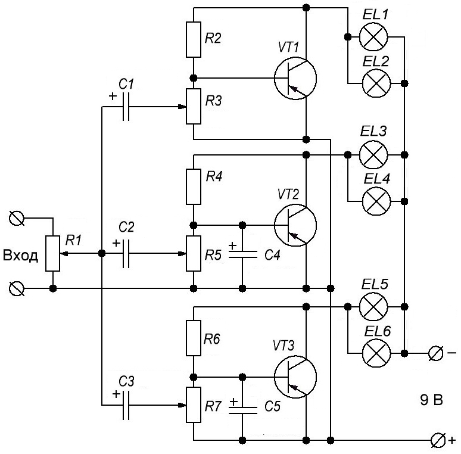

Цветомузыкальная установка на лампах накаливания (вариант 5)
Три раздельных усилительных каскада предназначены для усиления трех полос звуковой частоты:
- на транзисторе VT1 — на частоте свыше 1000 Гц,
- на транзисторе VT2 — от 200 до 1000 Гц,
- на транзисторе VT3 – ниже 200 Гц.
Разделение частот осуществляется простыми RC-фильтрами.
Входной сигнал берется с выхода акустических колонок. Его уровень регулируется с помощью переменный резистор R1. Для подстройки уровня яркости каждого канала используются переменные (подстроечные) резисторы R3, R5, R7.

Таблица 1
| Обозначение | Тип | Номинал | Количество | Примечание |
|---|---|---|---|---|
| C1, C4 | Конденсатор электролитический | 1 мкФ - 16 В | 2 | |
| C2, C5 | Конденсатор электролитический | 10 мкФ - 16 В | 2 | |
| C3 | Конденсатор электролитический | 50 мкФ - 16 В | 1 | |
| EL1-EL6 | Лампа накаливания | 6,3 В / 0,28 А | 6 | |
| R1 | Резистор переменный | 100 Ом | 1 | |
| R2, R4, R6 | Резистор постоянный | 3 кОм - 0,25 Вт | 3 | |
| R3, R5, R7 | Резистор переменный | 150 Ом | 3 | |
| VТ1-VТ3 | Биполярный транзистор | П213 | 3 | |
| VD1 | Диод | Д220 | 1 |
Резисторы R2, R4, R6 задают смещение на базах транзисторов. Нагрузкой каждого каскада являются две параллельно включенные лампочки (6,3 В×0,28 А). Питается схема от блока питания с выходным напряжением 9 В и максимальным током свыше 2 А.
Транзисторы могут иметь значительный разброс по усилению тока. Поэтому, значения резисторов R2, R4, R6 необходимо подбирать для каждого каскада. Ток коллектора при этом настраивается на такую величину, чтобы нити накала ламп немного светились в отсутствии входного сигнала. Для обеспечения стабильнй работы транзисторы необходимо установитьна радиаторы площадью от 75 кв.см.